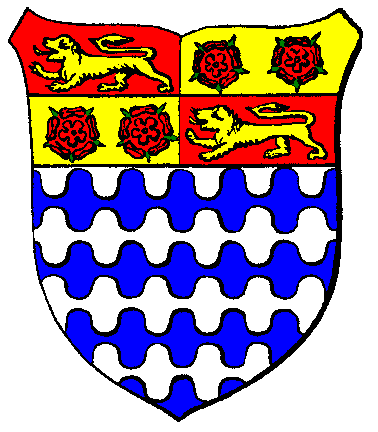

|

|
Das schwarze Brett
|
|
| Übersicht,
Anschläge und Stammtisch (RPG) |
|
Scherbenfußballpokal 447/448 (1  ) )
|
Lyra Callionymus
  |
Viertelfinale - Rückspiele - Strohfeuer in Fendrakan Grenzfeste:
Heute ist der große Tag, an dem die 6.Segelregatta stattfindet, der ich schon wochenlang entgegenfiebere. In meinem Team befindet sich Wolf ni Volon, den ich im Laufe des Tages auf der Hafeninsel erwarte.
Zuvor ist er mit seiner Mannschaft noch auf der Sonnensteppe im Einsatz, während ich es mir nicht nehmen lasse, das Spiel in Fendrakan Grenzfeste zwischen dem VFB Grenzfeste und den Eukalyptischen Schmauchkartoffeln selbst zu pfeifen.
Die Vorfälle der letzten Tage sind noch in Erinnerung. Was mir gleich zu Beginn des Spiels aufgefallen ist, dass ein Großteil der Fans von den Eukalyptischen Schmauchkartoffeln mit Strohhüten und Strohröckchen bekleidet zu dem Spiel erschienen sind. Mit dem Anpfiff regnete es dann Strohkonfetti aus dem Gästeblock. Durch das weite Rund schallten VFB-Rufe. Lautstark wurde die Heimmannschaft unterstützt, gegen welche die Eukalyptischen Schmauchkartoffeln zuvor noch nie einen Blumentopf gewinnen konnten.
Das Spiel war eine sehr spannende Angelegenheit. Der VFB war bis unter die Haarspitzen motiviert, aber die Schmauchkartoffeln agierten in der ersten Halbzeit cleverer, abgedroschener und erfolgreicher. Mit 3:1 führten sie vor dem Seitenwechsel, dann kam Grenzfeste wie vom Blitz getroffen aus der Kabine und erzielte das 2:3 und kassierte postwendend das 2:4. Noch einmal verkürzen sie auf 3:4, um dann wieder mit 3:5 in Rückstand zu geraten und kurz vor Schluß das 4:5 zu erzielen. Das war die erste Niederlage vom VFB Grenzfeste gegen die Eukalyptischen Schmauchkartoffeln, welche aufgrund der mehr erzielten Auswärtstore in das Halbfinale einziehen.
Dieses erreichte auch sehr überraschend Red Star Arboreum. Die Mannschaft von der Insel im Südwesten hatten das Hinspiel beim anderen Überraschungsteam, den Korona Käfig Kickern gewonnen und erreichte nun auf eigenem Platz im Rückspiel ein 2:2 Unentschieden.
Inzwischen ist freudestrahlend ein Vorbote von Wolf ni Volon auf der Hafeninsel eingetroffen. Seine Mannschaft FC Bolz Arboretum erkämpfte beim starken Neuling Mêlée Kickingbirds ein Unentschieden und hat sich somit aufgrund des Sieges im Hinspiel ebenfalls für die Runde der letzten 4 qualifiziert.
Im Duell der beiden Gründungsmitglieder zwischen der 1.Fußball-Legion und der Tuspo Seemannsgarn konnte sich der Turn und Sportverein durchsetzen. Auch das Rückspiel gewannen sie heute und erreichen damit das Halbfinale.
Ergebnisse Viertelfinale - Rückspiele:
Red Star Arboreum - Korona Käfig Kicker: 2:2(2:1)
Mêlée Kickingbirds - FC Bolz Arboretum: 3:3(0:2)
VFB Grenzfeste - Eukalyptische Schmauchkartoffeln: 4:5(1:3)
1.Fußball-Legion - Tuspo Seemannsgarn: 3:4(2:2)
Spielscheine - Viertelfinale - Rückspiele:
Red Star Arboreum
V: 7-8-9-6-0-0
A: 9-7-8-6-0-0
Korona Käfig Kicker
V: 6-6-6-6-6-6
A: 10-1-1-10-1-1
Mêlée Kickingbirds
V: 6-6-6-6-6-6
A: 1-1-1-1-10-10
FC Bolz Arboretum
V: 5-5-5-4-6-5
A: 0-10-10-0-10-0
VFB Grenzfeste
V: 2-6-2-6-6-6
A: 0-8-0-8-8-8
Eukalyptische Schmauchkartoffeln
V: 6-6-6-6-6-4
A: 1-8-10-8-8-0
1.Fußball-Legion
V: 6-5-5-5-6-6
A: 5-0-9-0-10-3
Tuspo Seemannsgarn
V: 4-6-4-4-6-6
A: 0-10-0-0-10-10
Lady Lyra Callionymus,
Vorsteherin von Atlantis,
Anführerin der glorreichen Nation "Freie Walfänger",
Siegerin im Steinekullern 440 und 444
Zur 17. Stunde am 81.Erntemond im Jahre 448 |
27.11.11 1:50
|
|
Wolf ni Volon
  |
Mann Oh Mann, war das ein Spiel. Da hatte meine Mannschaft als Ligaspieler ja eine Menge Dussel. Die Kickingbirds sind wirklich würdig, auch in der Liga zu spielen. Zum meinem Glück hat sich die größerer Spielerfahrung meiner Mannschaft durchgesetzt. Daher mein Kompliement an die Kickingsbirds sowie meinen Dank für dieses schöne und faire Spiel, welches eine Augenweide für die Zuschauer war.
Baron Wolf ni Volon,
Vorsteher von Arboretum Gondoria
Zur 3. Stunde am 83.Erntemond im Jahre 448 |
27.11.11 9:45
|
|
Lyra Callionymus
|
Auslosung für das Halbfinale:
Die Auslosung für das Halbfinale ergab folgende Paarungen:
FC Bolz Arboretum - Eukalyptische Schmauchkartoffeln
Tuspo Seemannsgarn - Red Star Arboreum
(((Die Hinspiele finden am Mittwoch, den 7.Dezember und die Rückspiele am Mittwoch, den 21. Dezember statt - Das Finale ist am Mittwoch, den 28. Dezember in Noremberga.)))
Lady Lyra Callionymus,
Vorsteherin von Atlantis,
Anführerin der glorreichen Nation "Freie Walfänger",
Siegerin im Steinekullern 440 und 444
Zur 22. Stunde am 88.Erntemond im Jahre 448 |
28.11.11 18:12
|
|
Glenn Dowan
  |
Stht am Spielfeldrand und applaudiert wie alle Zuschauer die sich nach diesem spannenden Spiel alle erhiben haben.
Meine Manschaft hat aufopferungsvoll gekämpft und unsere wohlüberlegte Taktik wäre auch fast aufgegangen, aber ich muss meinen aufrichtigen Glückwunsch an die Eukalyptische Schmauchkartoffeln aussprechen. Das war eine Taktische Meisterleistung der wir trotz intensiver Vorbereitung nichts entgegnsetzten konnten.
Es war ein würdiges Pokalspiel und ich glaube ich spreche im Namen aller Zusachuer wir freuen uns schon auf die nächsten Aufeinandertreffen.
*macht sich mit seinen Spielern, Betreuern und Fans auf zu einem Zug durch die Tavernen von Fendrakan Grenzfeste.
Ein besonderer Dank auch nchmals an Lyra die das Spiel mit sehr viel geschick und Fingerspitzengefühl vorbildlich geleitet hat.
Fürst Glenn Dowan,
Vorsteher von Fendrakan Grenzfeste,
Ehemann der reizenden Livia Dowan-Tan
Zur 2. Stunde am 89.Erntemond im Jahre 448 |
28.11.11 19:04
|
|
Lyra Callionymus
|
Scherbenfussballpokal - Halbfinale - Hinspiele:
So schön greifbar erscheint das Finale in Noremberga nun für die 4 letzten verbliebenen Teams.
Bis unter die Haarspitzen motiviert traten die Eukalyptischen Schmauchkartoffeln beim FC Bolz Arboretum an und ließen keinen Zweifel daran, dass sie zum zweiten Mal in Folge das Finale erreichen wollen. Der FC Bolz agierte im eigenen Stadion eher vorsichtig. Zwar schon offensiv aber doch nicht ganz so entschlossen. In der Abwehr entstanden immer wieder Lücken und luden die Schmauchkartoffeln zum Toreschießen ein. 5 Mal krachte es und die Heimmannschaft konnte dem bloß 2 Tore entgegensetzen. Im Rückspiel sind die Schmauchkartoffeln ob dieser Glanzleistung haushoher Favorit.
Im Duell des Neulings beim alterwürdigem Tuspo Seemannsgarn konnte das Heimteam einen klaren Sieg in der zweiten Spielhälfte herausspielen und steht mit eine Fuß im Finale. Eine Tuspo in dieser Form wäre sicherlich ein großer Gewinn für die Scherbenliga. Bleibt sehr zu hoffen, dass sie sich in der nächsten Saison für die Aufstiegsrunde anmeldet. Ebenso Red Star ARboreum hat in den bisherigen Pokalspielen bewiesen, dass sie in der Lage wären, die eingefahrenen Systeme der großen mal kräftig aufzumischen.
Hoffen wir auf spannende Rückspiele, wo durchaus noch Überraschungen möglich sind.
Ergebnisse - Scherbenfußballpokal - Halbfinale - Hinspiele:
FC Bolz Arboretum - Eukalyptische Schmauchkartoffeln: 2:5(1:4)
Tuspo Seemannsgarn - Red Star Arboreum: 5:2(1:2)
Spielscheine - Scherbenfußballpokal - Halbfinale - Hinspiele:
FC Bolz Arboretum (54 Punkte eingesetzt)
V: 4-3-5-5-5-5
A: 9-8-0-10-0-0
Eukalyptische Schmauchkartoffeln (70 Punkte eingesetzt)
V: 6-7-6-6-6-7
A: 1-10-10-1-1-9
Tuspo Seemannsgarn
V: 6-4-4-6-4-6
A: 10-0-0-10-0-10
Red Star Arboreum
V: 8-7-4-4-4-3
A: 7-6-6-6-5-0
Lady Lyra Callionymus,
Vorsteherin von Atlantis,
Anführerin der glorreichen Nation "Freie Walfänger",
Siegerin im Steinekullern 440 und 444
Zur 4. Stunde am 37.Dunkelfrost im Jahre 448 |
07.12.11 16:26
|
|
| Eukal der Jeschmeidige (RIP) |
Nun ja, wir haben voller Elan gekämpft, doch Bolz wird sicher gut erholt ins nächste Match starten.
So werden wir sehen, wer denn taktisch besser steht.
Jetzt heißt es jedoch erstmal für uns gegen die Lederhosen aus Lorderon die Spitze in der Scherbenliga zu sichern.
Eukal der Jeschmeidige,
Vorsteher von Je Olde Kratt,
Anführer der glorreichen Nation "Die Taugenichtse der Eukalypse",
Reisender Journalist der Taugenichtse,
Trainer der" Eukalyptischen Schmauchkartoffeln"
Zur 19. Stunde am 42.Dunkelfrost im Jahre 448 |
08.12.11 23:48
|
|
Wolf ni Volon
|
Das Spiel ist ja auch erst zu Ende, wenn der Schiri abpfeift ^^
Wir haben im Halbfinale jetzt Halbzeit und die nächste Runde wird die endgültige Entscheidung bringen.
Ich kann melden, dass alle Spieler gesundt und munter sind und das Rückspiel sicherlich sehr spannend sein wird. Ich kann allen Fans nur empfehlen, sich dieses Spiel nicht entgehen zu lassen.
Baron Wolf ni Volon,
Vorsteher von Arboretum Gondoria
Zur 8. Stunde am 46.Dunkelfrost im Jahre 448 |
09.12.11 19:43
|
|
Lyra Callionymus
|
Halbfinale - Rückspiele - Tuspo Seemannsgarn zieht ins Finale ein!
Mit einem deutlichen 5:0 Auswärtssieg bei Red Star Arboreum erreichte die Tuspo Seemannsgarn am Abend das Finale des Scherbenfußballpokals in Noremberga. Das Hinspiel auf eigenem Platz hatte das Gründungsmitglied der ersten Scherbenliga bereits mit 5:2 auf eigenem Platz gewonnen.
Mit dem gleichen Ergebnis konnten die Eukalyptischen Schmauchkartoffeln das Hinspiel bei FC Bolz Arboretum gewinnen.
Auf eigenem Platz tat sich der alte und neue Meister jedoch schwer. Nach 90 Minuten triumphierte diesmal der FC Bolz mit 5:2 und somit wird die Entscheidung nun im 11-Fußschießen ermittelt.
...wir melden uns in Kürze wieder...
Ergebnisse - Scherbenfußballpokal - Halbfinale - Rückspiele:
Eukalyptische Schmauchkartoffeln - FC Bolz Arboretum: 2:5(1:2)
Red Star Arboreum - Tuspo Seemannsgarn: 0:5(0:2)
Spielscheine - Halbfinale - Rückspiele:
Eukalyptische Schmauchkartoffeln
V: 5-5-6-5-6-5
A: 0-0-9-0-9-0
FC Bolz Arboretum
V: 5-5-5-5-5-5
A: 9-9-0-10-0-8
Red Star Arboreum
V: 6-5-6-5-6-2
A: 5-5-5-5-5-5
Tuspo Seemannsgarn
V: 4-6-4-4-6-6
A: 0-10-0-0-10-10
Lady Lyra Callionymus,
Vorsteherin von Atlantis,
Anführerin der glorreichen Nation "Freie Walfänger",
Siegerin im Steinekullern 440 und 444
Zur 11. Stunde am 7.Saatmond im Jahre 449 |
21.12.11 18:07
|
|
Lyra Callionymus
|
Elffußschießen zwischen den Eukalyptischen Schmauchkartoffeln und dem FC Bolz Arboretum
Der FC Bolz beginnt,
SChütze schießt links, Gronk der Latrinentroll bleibt stehen..., Tor!
Nun der Schütze der Schmauchkartoffeln, harter Schuß rechts, Torhüter springt nach links..., Tor!
Zweiter Schuss vom FC Bolz ins rechte Eck, keine chance für den Torwart der Schmauchkartoffeln...Tor!
Zweiter Schuss von den Eukalyptischen Schmauchkartoffeln, hart ins linke Eck, keine chance für den Torwart...Tor!!!
FC Bolz zum dritten, sicher ins lionke Eck..., Tor!
Nun wieder die Schmauchkartoffeln, der Schütze haut das Ding ins linke Eck, der Torhüter vom FC Bolz ahnt das Eck, faustet den Ball an die Latte doch von dort springt er ins Tor, glücklich... Tooor!
Die Spieler sind bisher eiskalt, nun der Kapitän vom FC Bolz, legt sich den Ball zurecht, schießt auf die Mitte, Gronk bleibt stehen und hat er den Ball??? Nein..., er rutscht ihm durch die Finger..., Tooor!
Wieder die Schmauchkartoffeln, der Schütze läuft an...schießt rechts..., er hat ihn den Ball, der Torwart....gehalten!!
Nun der fünfte Schuß des FC Bolz, wenn der Schuß reingeht dann..., die Spieler stehen gemeinsam am Mittelkreis. Wir hoffen, das die regionalen Berichterstatter von Wolf ni Volon und Eukal dem Jeschmeidigen und später darüber nochmals mit den genauen Torschützen berichten.
Nun läuft er an..., schießt... rechts....-Tooooooor!!!!
...Die Fans des FC Bolz Arboretum stürmen den Platz...
Sensationell!
11-Fußschießen:
FC Bolz Arboretum
Torwart: L-R-L-R-M---M-L-L-R-R-M
Schütze: L-R-L-MJ-R---L-LJ-L-MJ-M-R
Eukalyptische Schmauchkartoffeln:
Torwart: M-M-M-M-M---M-M-M-M-M-M
Schütze: RJ-LJ-LJ-R-L---L-R-R-L-L-R
Das Finale des Fußballscherbenpokals 447/448 wird erst 449 in Noremberga ausgetragen und es heißt:
FC Bolz Arboretum - Tuspo Seemannsgarn
(((Mittwoch, 28.12.2011, 60 Punkte stehen zur Verfügung - 11-Fußschein muß neu eingereicht werden)))
Lady Lyra Callionymus,
Vorsteherin von Atlantis,
Anführerin der glorreichen Nation "Freie Walfänger",
Siegerin im Steinekullern 440 und 444
Zur 13. Stunde am 7.Saatmond im Jahre 449 |
21.12.11 18:25
|
|
Wolf ni Volon
|
Da hat sich die Mannschaft mit dem besten Sturm der Saison natürlich durchsetzten müssen bei diesem kleinen Endspiel. Nicht umsonst hab mein Team das Torjägerkatapult gewonnen.
Da beide Mannschaften für ihr Spiel eine ähnliche Taktik anwandten und meine Leute einen Tick spritziger und ausgeruhter waren, konnte der Rückstand in der zweiten Hälfte des Spiels aufgeholt werden, zu einem Sieg im Spiel reichte es leider nicht.
Die Zuschauer haben - wie von mir vorhergesagt - wahrlich etwas für ihr Geld bekommen und das - wenn ich mich recht erinnere - das 1. Elfmeterschiessen dieser Pokalrunde erleben dürfen.
Zum Ende der langen Saison war meine Mannschaft aber mittlerweile abgebrüht genug, um sich im Hexenkessel des Stadions der Schmauchkartoffel nicht aus der Ruhe bringen zu lassen. Hilfreich waren natürlich auch die zahlreichen mitgereisten Fans, die sicher während des Spiel lautstark und gegen Ende gar lauter als das Heimpublikum gemerkbar machten.
Den Meister gleich nach seinem Titelgewinn bezwungen zu haben, wurde natürlich nicht ungern von den mitgereisten Fans gesehen und anschließend auf der Heimreise an Bord der diversen Schiffe gefeiert.
Nun gilt es für den Finale zu trainieren und den Gegner nicht zu unterschätzen.
Baron Wolf ni Volon,
Vorsteher von Arboretum Gondoria
Zur 15. Stunde am 7.Saatmond im Jahre 449 |
21.12.11 19:05
|
|
| Eukal der Jeschmeidige (RIP) |
Wir beglückwünschen Bolz zu dem Sieg. Auch wenn wir ein weiteres Mal das legendäre Doppel nicht gewinnen konnten (was wir dann nächste Saison nachholen werden), haben wir doch das spannende Spiel genossen.
Voller Aufregung habe ich bis spät an den Taktiken gefeilt (leider die falsche gewählt) und wieder einmal festgestellt, dass wir das Elffußschießen dringend üben müssen.
Und Gronk hätte diese Steinsuppe nicht essen sollen. Seine Hände waren etwas glitschig und hielten den entscheidenen Elffuß nicht. So wünschen wir den beiden Finalisten ein gutes Spiel. Wir sehen uns nächste Saison.
Eukal der Jeschmeidige,
Vorsteher von Je Olde Kratt,
Anführer der glorreichen Nation "Die Taugenichtse der Eukalypse",
Reisender Journalist der Taugenichtse,
Trainer der" Eukalyptischen Schmauchkartoffeln"
Zur 7. Stunde am 11.Saatmond im Jahre 449 |
22.12.11 15:26
|
|
Lyra Callionymus
|
1.Runde - Hinspiele:
1.Fußball-Legion - SpVg Wolfstern: 5:1(2:0)
SpVG Nín Andúne - FC Petroleum Tannhausen: 3:5(1:2)
1.FC Blutgrätsche Noremberga - FC Bolz Arboretum: 3:4(0:2)
SC Schmetterlinge - Tuspo Seemannsgarn: 3:4(2:1)
1.Runde - Rückspiele:
SpVg Wolfstern - 1.Fußball-Legion: 5:6(3:3)
FC Petroleum Tannhausen - SpVg Nín Andúne: 0:4(0:2)
FC Bolz Arboretum - 1.FC Blutgrätsche Noremberga: 6:5(4:3)
Tuspo Seemannsgarn - SC Schmetterlinge: 6:2(2:1)
Achtelfinale - Hinspiele:
Sigil Sentinels - FC Bolz Arboretum: 7:6(3:4)
Eukalyptische Schmauchkartoffeln - Lorderons Lederschützen: 1:0(1:0)
Korona Käfig Kicker - Schwarzschwänzige Schattenwölfe: 4:2(4:1)
SpVg Nín Andúne - Tuspo Seemannsgarn: 2:5(1:2)
Mêlée Kickingbirds - SC Seestern: 4:2(0:1)
VFB Grenzfeste - SC Tinu eF: 6:4(4:2)
1. Fußball-Legion - Wilde Vagabunden: 7:4(2:3)
Red Star Arboreum - SpVgg Kräuter-Vürth: 6:4(4:2)
Achtelfinale - Rückspiele:
FC Bolz Arboretum - Sigil Sentinels: 5:2(2:1)
Lorderons Lederschützen - Eukalyptische Schmauchkartoffeln: 0:0(0:0)
Schwarzschwänzige Schattenwölfe - Korona Käfig Kicker: 6:5(2:2)
Tuspo Seemannsgarn - SpVg Nín Andúne: 9:0(3:0)
SC Seestern - Mêlée Kickingbirds: 4:6(4:4)
SC Tinu eF - VFB Grenzfeste: 4:4(2:2)
Wilde Vagabunden - 1.Fußball-Legion: 2:4(1:1)
SpVgg Kräuter-Vürth - Red Star Arboreum: 6:6(2:2)
Viertelfinale - Hinspiele:
Korona Käfig Kicker - Red Star Arboreum: 3:4(2:3)
FC Bolz Arboretum - Mêlée Kickingbirds: 3:2(2:1)
Eukalyptische Schmauchkartoffeln - VFB Grenzfeste: 1:2(0:1)
Tuspo Seemannsgarn - 1.Fußball-Legion: 6:3(4:1)
Viertelfinale - Rückspiele:
Red Star Arboreum - Korona Käfig Kicker: 2:2(2:1)
Mêlée Kickingbirds - FC Bolz Arboretum: 3:3(0:2)
VFB Grenzfeste - Eukalyptische Schmauchkartoffeln: 4:5(1:3)
1.Fußball-Legion - Tuspo Seemannsgarn: 3:4(2:2)
Halbfinale - Hinspiele:
FC Bolz Arboretum - Eukalyptische Schmauchkartoffeln: 2:5(1:4)
Tuspo Seemannsgarn - Red Star Arboreum: 5:2(1:2)
Halbfinale - Rückspiele:
Eukalyptische Schmauchkartoffeln - FC Bolz Arboretum: 2:5(1:2)3:5 im 11-Fußschießen
Red Star Arboreum - Tuspo Seemannsgarn: 0:5(0:2)

Finale in Noremberga:
FC Bolz Arboretum - Tuspo Seemannsgarn
Karten gibt es bei allen bekannten Vorverkaufsstellen und in allen Häfen zu kaufen.
Lady Lyra Callionymus,
Vorsteherin von Atlantis,
Anführerin der glorreichen Nation "Freie Walfänger",
Siegerin im Steinekullern 440 und 444
Zur 3. Stunde am 12.Saatmond im Jahre 449 |
22.12.11 20:12
|
|
Lyra Callionymus
|
Finale um den Fußball - Scherbenpokal 447/448 in Noremberga
Beide Mannschaften mußten schon in der ersten Runde des Pokals ran. Der FC Bolz Arboretum hatte dabei das Glück, das Stadion in Noremberga bereits kennenzulernen.
In der ersten Runde konnten sie hier den 1.FC Blutgrätsche bezwingen. Im Achtelfinale schickten sie dann den Cupverteidiger aus Sigil nach Hause. Im Viertelfinale bezwangen sie die Mêlée Kickingbirds, um sich dann im Halbfinale gegen den zweimaligen Meister, die Eukalyptischen Schmauchkartoffeln, durchzusetzen.
Nun wartet im Finale mit der Tuspo Seemannsgarn keine allzu leichte Aufgabe.
Die Tuspo Seemannsgarn spielte wie auch der FC Bolz Arboretum schon in Tonys Scherbenliga im Jahre 439. Die Mannschaft ist folglich wesentlich älter als die Eukalyptischen Schmauchkartoffeln und die Sigil Sentinels. So räumte die Tuspo in der ersten Runde mit SC Schmetterlinge einen Scherbenligisten aus dem Weg, bezwang im Achtelfinale SpVg Nín Andúne,
um dann im Viertelfinale den zweiten Scherbenligisten rauszuwerfen, nämlich die 1.Fußball-Legion. Das Finale erreichten sie dann im Halbfinale über Red Star Arboreum.
Das Stadion in Noremberga ist bis zum Rand ausverkauft.
Der FC Bolz tritt an im Tor mit dem Elffußhelden Airleas Cynbel. In der Verteidigung Hogisch Knoschenbrecher und Airsgainne Domhnull, im Sturm Pul Glarandel und Garandith Glyndil..., - leider ist mir der Spielberichtsbogen gerade weggeflogen so das ich die Namen de Spieler von der Tuspo Seemannsgarn nun nicht mehr vorlesen kann...
Kräftige Regenschauer ziehen über das Land. Ein Wetter wie gemacht für die Tuspo Seemannsgarn. Es ist als würde sich das ganze Meer über Noremberga ergießen.
Anpfiff! Sofort versucht der FC Bolz das Spiel zu bestimmen aus einer kompakten Abwehr heraus. Die Tuspo Seemannsgarn ähnelt vom Spielsystem ein wenig SC Tinu eF. Durch hin und hergeschiebe des Leders versuchen sie in der Anfangsviertelstunde das Tempo aus dem Spiel zu nehmen, um nun das ganze urplötzlich zu forcieren. Der FC Bolz sieht sich plötzlich einer Angriffswelle ausgesetzt und rutscht ein ums andere Mal aus auf dem feuchten Geläuf... - Tor! Es kommt in der 23. Minute wie es kommen mußte. 1:0 führt die Tuspo Seemannsgarn.
Nun wirft der FC Bolz Alles nach vorne. Etwas verfrüht und hektisch wirkt das. Die Tuspo kontert und Tor..., 2:0. Aber der FC Bolz steckt nicht auf. Nur 3 Minuten später der Anschlußtreffer durch Glyndil.
Die Tuspo Seemannsgarn versucht erneut, das Tempo aus dem Spiel zu nehmen, der FC Bolz hält weiter das Tempo hoch, sobald er im Ballbesitz ist. Die letzten 20 Minuten der ersten Halbzeit spielen sich vor dem Tor der Tuspo Seemannsgarn ab. Kaum ein einziger Entlastungsangriff. Nur wenige Sekunden vor dem Pausenpfiff erzielt erneut Glyndil den viel umjubelten Ausgleich. Es ist wieder Alles offen. Mit 2:2 Unentschieden treten beide Mannschaften den Weg in die Kabine an.
Gute Stimmung auch während der Halbzeitpause. Einige Artisten vollführen Kunstücke auf Rennpferden und zertrampeln dabei allerdings den sehr matschigen Rasen.
Beide Mannschaften kommen aus der Kabine. Der FC Bolz versucht nun etwas besser zu kombinieren, die Tuspo Seemannsgarn spielt weiter verhalten.
Es sind nun rund 63 Minuten gespielt. Wie vom Blitz getroffen beginnt die Tuspo Seemannsgarn plötzlich das Tempo zu erhöhen. Blitzsauberer Angriffsfußball. Der FC Bolz Arboretum beginnt reichlich zu schwitzen.
67.Minute: Aus vollem Lauf zieht der rechte Stürmer der Tuspo ab. Keine chance für Cynbel. Der Bakll zappelt im Fischernetz - 3:2 Tuspo.
70.Minute: Seemannsgarn wieder am Ball. Diesmal über links. Der Stürmer rennt alleine auf das Tor des FC Bolz zu, Cynbel komnmt herausgerannt und rutscht aus. Der Stürmer schlenzt den Ball über ihn zum 4:2 ins Tor.
Nun wird das Spiel sehr schnell und immer besser. FC Bolz zeigt nun, wer in der Scherbenligist ist. Die Fans peitschen die Mannschaft nocheinmal an. Zwei Tore liegt man zurück aber will noch nicht aufgeben, nun ein Konter....Toooor. Die Tuspo Seemannsgarn führt ein wenig überraschend klar mit 5:2. Aber es gibt kein Rückspiel. Dies ist das Finale! Der FC Bolz enttäuschte im Gesammten über weite Strecken des Spiels.
Eine Minute vor dem Ende gelingt zwar noch das 5:3 aber das sollte es dann schon gewesen sein.
Die Saison 447/448 endet im Jahre 449 mit einer faustdicken Überraschung:
Scherbenpokalsieger ist die Tuspo Seemannsgarn!
Wir gratulieren William Tifon zum größten Erfolg in der Vereinsgeschichte!
Finale in Noremberga:
Tuspo Seemannsgarn - FC Bolz Arboretum: 5:3(2:2)
444/445 Fortuna Butterwiese
445/446 Sigil Sentinels
447/448 Tuspo Seemannsgarn
Spielscheine Finale
Tuspo Seemannsgarn
V: 4-6-4-4-6-6
A: 0-10-0-0-10-10
FC Bolz Arboretum
V: 8-3-3-5-5-6
A: 5-8-8-0-0-9
Lady Lyra Callionymus,
Vorsteherin von Atlantis,
Anführerin der glorreichen Nation "Freie Walfänger",
Siegerin im Steinekullern 440 und 444
Zur 8. Stunde am 37.Saatmond im Jahre 449 |
28.12.11 17:20
|
|
someone
  |
eine saison geht vorüber...
eine saison deren verlauf wohl niemand auch nur erahnen hätte können!
wer hatte schon Tuspo Seemannsgarn auf der liste der möglichen pokalsieger? der verein, welcher nicht in der liga spielt, war zu beginn der saison noch den wenigsten bekannt und stürmte vorbei an den schmauchkartoffeln direkt ins finale um sich dort gegen den pokalanwärter FC bolz durch zu setzen!
-gratulation zu dieser leistung!
ebenfalls gratulieren wir den aufsteigern Blutgrätsche Noremberga und Korona Käfig Kicker, welche sich gegen den SpVgg Kräuter fürth und die Schwarzschwänzigen Schattenwölfe durchsetzen konnten.
natürlich gratuieren wir auch den eukalyptischen schmauchkartoffeln, welche es wieder schafften bei ihrer starken konkurrenz in der liga dennoch keinen zweifel an ihrer spitzenposition zu lassen.
wir lorderoner hatten auch außerhalb des fußballs viel zu kämpfen und einige tragische verluste zu verbuchen und als ich schließlich schiffbruch erlitt, schienen die lederschützen gleich mit unter zu gehen. als wir am 13. spieltag mit nur 3 punkten das tabellenende schmückten, 7punkte vom nächsten platz entfernt, schien ein klassenerhalt kaum noch möglich. doch wir kämpften! und am tag vor dem letzten spiel, hatten wir mit 12 punkten anschluss an den SC seestern auf platz 9 (13punkte) unter der 1. fußballegion (14punkte) und dem SpVgWolfstern (15punkte) und die differenz unseres vereins war nicht gerade vorteilhaft...
für einen klassenerhalt mussten wir nicht nur den sc seestern schlagen, die 1. fußballegion musste auch verlieren. so mussten wir nach dem schwer erkämpften sieg gegen den sc immernoch weiter zittern, bis das spielergebniss der anderen spiele bekannt gegeben wurde.
entsprechend groß war die freude bei uns, als wir uns schließlich in der schlusstabelle doch noch auf platz 8 wieder fanden. wir hätten uns nie träumen lassen, dem abstieg einmal so nahe zu stehen und wissen nun, dass wir in der ersten liga nicht nur den blick auf die spitze richten müssen, sondern auch immer einen blick auf das tabellenende richten müssen. die konkurrenz ist groß, diese saison war zu groß für den sc seestern und die 1. fußballegion... beide vereine sind würdige gegner und haben durchaus das potential nächste saison direkt wieder auf zu steigen - ich wünsche den vereinen die kraft dazu!
die saison 447/448 wird uns immer im gedächtnis bleiben und wir freuen uns über alle maßen darauf, wenn der startpfiff für die saison 448/449 ertönt und es wieder heißt "mögen die besten gewinnen".
vielen dank an den Scherben-Fußball-Verband, Lyra Callionimus und die besten Fans der scherbe!
someone,
Anführer der glorreichen Nation "Schattenschwingen",
Trainer und Spieler d. Lorderons Lerderschützen,
Verlobter der reizenden Anat Elemmiire
Zur 18. Stunde am 37.Saatmond im Jahre 449 |
28.12.11 19:35
|
|
| William Tifon (RIP) |
Ahoi,
im Namen der Mannschaft bedanke ich mich für die Glückwünsche zum Pokalsieg. Mein Dank geht ebenso an die teilnehmenden Mannschaften, die Fans und vor allem an Lyra Callionymus für die Ausrichtung des Turniers - werte Lady, ich verbeuge mich vor euch.
Wenn ich den Saisonverlauf der Pokalrunde zusammenfassen sollte fällt mir nur ein Wort dafür ein Unglaublich. Unglaublich wie die Mannschaft über sich hinausgewachsen ist und am Ende den größten Erfolg der Vereinsgeschichte nach Hause geholt hat, um nicht zu sagen, den einzigsten Erfolg. Denn wie schon bemerkt wurde, wir sind schon einige Jahre dabei, doch blieben große Siege bisher aus.
Als Kernpunkt des Erfolges sehe ich die Umstellung der Spielstrategie. Ein kompakte Abwehr, die wie ich zugegeben muss noch einige Schwächen aufwies, gepaart mit einem Angriffsfußball, der uns mit wenigen Ballkontakten in den gegnerischen Strafraum brachte. Herausragend waren dabei die Spieler Coilin Cain, der mit 28 Toren mehr als die Hälfte der geschossenen Toren für sich verbuchen darf, sowie Eboli Weinlöffel, der aus dem Mittelfeld heraus immer wieder die Bälle nach vorne gab und dazu selbst 9 Tore auf seiner Torschützenliste verzeichnen kann.
Nachdem wir in der ersten Runde die Schmetterlinge geschlagen haben, merkten wir schon, hier ist alles möglich. Doch konzentrierten wir uns auf jedes Spiel und fanden unseren Rhythmus. Für uns war das Erreichen jeder neuen Runde ein Erfolg, so konnten wir immer frei aufspielen.
Die Mannschaft hat noch eine Bitte an mich herangetragen, die Bitte einer Korrektur. Wir sind ein Turn-und Sportverein, keine Vereinigung, somit heißt es der TuSpo, ich bitte das doch ordnungsgemäß zu verzeichnen.
Möge der Tag euch gehören.
Gez. W. Tifon
Kardinal William Tifon,
Kardinal im Dienste des einzig wahren Glaubens an Bendur,
Anführer der glorreichen Nation "Recuerdo de Esperanza"
Zur 21. Stunde am 39.Saatmond im Jahre 449 |
29.12.11 7:41
|
|
Übersicht,
Anschläge und Stammtisch (RPG)
|
|
|
|